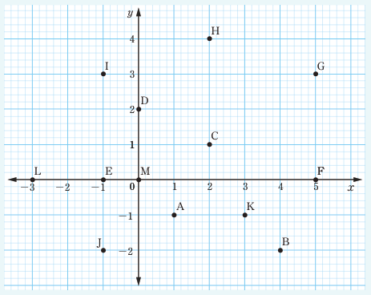

Each point on a plane is uniquely represented by means of an ordered pair of real numbers called the coordinates of a point. The xy-plane is divided into four parts called quadrants as shown in Figure 6.1. The first quadrant (I) has positive values of x and y, the second quadrant (II) has negative values of x and positive values of y. The third quadrant (III) has all negative values of x and y and the fourth quadrant (IV) has x positive values and y negative values. Recall that, the positions of points on the xy-plane are determined by using the x and y coordinates. For example, for the point (4, 6), the first number 4 represents a distance from the origin along the x-axis and 6 represents a distance from the origin along the y-axis. Engage in Activity 6.1 to review the basic concepts in coordinate geometry.
Activity 6.1: Reading coordinates of points on xy-plane
- Use your class sitting arrangement to locate at least 5 positions of different students.
- Use the positions of students in task 1 to take the following measurements:
- Measure the perpendicular distances from their position to both the left and front walls.
- Record the measurements obtained in (a) in the form of (x, y) where x represents the distance from the left wall and y represents the distance from the front wall.
- Repeat task 2 for all the positions of students identified in task 1.
- Represent the coordinates of the points in tasks 2 and 3 on the xy-plane.
Example 6.1
Write the ordered pair for each point shown in the following figure.
